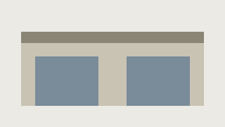

Voor identiteitskaarten, adreswijzigingen en attesten.
Maandag tot vrijdag van 9u tot 12u. Op woensdagnamiddag van 14u tot 16u.

Bel naar 051 12 34 56 of mail naar loket@zonnebeke.example.
Alle regels staan in klik hier.
Gemeentehuis Zonnebeke, Markt 1.